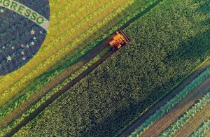

A Soja no Agronegócio
O Brasil tem uma história rica e complexa no campo do agronegócio, uma narrativa que se entrelaça com sua própria identidade nacional e com as transformações econômicas ao longo dos séculos. Desde os primeiros dias da colonização até os desafios contemporâneos do século XXI, o país testemunhou uma evolução marcante nesse setor vital.
O início da história do agronegócio brasileiro remonta aos tempos coloniais, quando os colonizadores portugueses introduziram culturas como a cana-de-açúcar. Essa foi a semente do que viria a ser um dos principais pilares da economia brasileira por séculos: o açúcar. As vastas plantações de cana se espalharam por terras férteis, e a mão-de-obra escrava africana foi brutalmente explorada para atender à crescente demanda por esse produto tão valioso.
No entanto, foi o ciclo do café que realmente definiu o Brasil como uma potência agrícola. No século XIX, especialmente nas regiões do Vale do Paraíba, Sudeste do país, o café se tornou o "ouro negro", impulsionando a economia brasileira para o cenário mundial. Grandes fazendas surgiram, e o Brasil rapidamente se tornou o maior produtor de café do mundo.
O século XX trouxe consigo a industrialização e a modernização do setor agrícola. Novas tecnologias foram introduzidas, desde tratores até técnicas avançadas de cultivo e colheita. A agricultura diversificou-se, incorporando culturas como soja, milho, algodão e carne bovina. A expansão das fronteiras agrícolas, principalmente na região Centro-Oeste, impulsionou ainda mais o crescimento do setor.
Hoje, o Brasil é uma potência global no agronegócio. É o maior produtor e exportador mundial de café, açúcar, suco de laranja, carne bovina e soja, entre outros produtos agrícolas. As vastas extensões de terra dedicadas à agricultura, combinadas com um clima favorável e avanços tecnológicos, garantiram ao país uma posição de destaque no cenário mundial.
No entanto, essa história de sucesso não está isenta de desafios. Questões como o desmatamento na Amazônia, a degradação do solo, o uso intensivo de agrotóxicos e as questões sociais relacionadas à distribuição de terras e trabalho ainda são fontes de preocupação. O Brasil enfrenta o desafio de conciliar o crescimento econômico com a preservação ambiental e a justiça social, buscando um desenvolvimento agrícola mais sustentável e equitativo.
Em suma, a história do Brasil no agronegócio é uma história de transformação, resiliência e crescimento. É uma narrativa que reflete não apenas a evolução do setor agrícola, mas também as mudanças sociais, econômicas e ambientais que moldaram o país ao longo dos séculos. O agronegócio continua a desempenhar um papel fundamental na economia brasileira, impulsionando o crescimento, gerando empregos e alimentando o mundo.
No geral, a soja continua desempenhando um papel crucial no agronegócio brasileiro, impulsionando o crescimento econômico, gerando empregos e contribuindo para as exportações do país, enquanto enfrenta desafios relacionados à sustentabilidade e à responsabilidade social.

A Jornada do Brasil no Agronegócio
Ao longo dos séculos, o Brasil tem tecido uma história rica e complexa no mundo do agronegócio, moldando não apenas sua economia, mas também sua identidade nacional. Desde os primeiros dias da colonização portuguesa até os desafios do século XXI, o país testemunhou uma evolução notável nesse setor vital.
Nos primórdios, a terra fértil e o clima favorável foram explorados para cultivar produtos como cana-de-açúcar e café, que em diferentes períodos foram o pilar da economia brasileira. O ciclo do açúcar e do café deixou marcas profundas na paisagem e na sociedade brasileira, com plantações extensas e a exploração da mão-de-obra escrava.
Com o passar do tempo, o Brasil embarcou em uma jornada de modernização agrícola. Tecnologias avançadas foram introduzidas, transformando vastas extensões de terra em fazendas altamente produtivas. A expansão do agronegócio trouxe diversificação, com culturas como soja, milho, algodão e carne bovina ganhando destaque.
Hoje, o Brasil é um gigante global no setor agrícola, sendo um dos maiores produtores e exportadores de commodities agrícolas do mundo. A imagem do país está intrinsecamente ligada à vastidão de suas terras agrícolas, à exuberância de suas florestas e à diversidade de sua produção.
No entanto, essa história de sucesso não está isenta de desafios. A pressão sobre o meio ambiente, o desmatamento na Amazônia, as preocupações com a sustentabilidade e as questões sociais relacionadas à distribuição de terras e mão-de-obra são apenas alguns dos obstáculos que o Brasil enfrenta no caminho para um agronegócio mais responsável e sustentável.
Apesar dos desafios, a história do Brasil no agronegócio é uma narrativa de resiliência, inovação e crescimento. É uma história em constante evolução, moldada por uma combinação única de fatores históricos, culturais, ambientais e econômicos.
Esta imagem captura a imensidão e a vitalidade do agronegócio brasileiro, com vastas plantações de soja estendendo-se até onde a vista alcança. É um lembrete visual do papel fundamental que o Brasil desempenha na produção de alimentos e no cenário agrícola global.

O Agronegócio em nossas vidas
O agronegócio relacionado à soja desempenha um papel fundamental em nossas vidas de várias maneiras, impactando desde a nossa alimentação até questões ambientais e econômicas. Aqui está um texto detalhando esses aspectos:
A soja é uma das culturas agrícolas mais importantes do mundo e desempenha um papel crucial no agronegócio global. Originária da Ásia, a soja tornou-se uma cultura amplamente cultivada em várias partes do mundo, com o Brasil emergindo como um dos principais produtores e exportadores.
Em primeiro lugar, a soja é uma fonte essencial de alimentos e ingredientes em nossa dieta diária. Ela é utilizada na produção de uma ampla variedade de produtos alimentícios, desde óleo de cozinha até proteínas vegetais, leite de soja, tofu e uma variedade de alimentos processados. Assim, o agronegócio da soja tem um impacto direto em nossas escolhas alimentares e na disponibilidade de produtos em nossos supermercados.
Além disso, a soja desempenha um papel fundamental na cadeia alimentar animal. É uma das principais fontes de ração para animais de criação, como gado, suínos e aves. Portanto, o agronegócio da soja também influencia indiretamente o fornecimento e os preços de carne e produtos lácteos.
No entanto, o impacto da soja vai além da alimentação humana e animal. O cultivo em larga escala da soja tem implicações significativas para o meio ambiente. O desmatamento de áreas florestais para abrir espaço para plantações de soja, especialmente na região amazônica do Brasil, levanta preocupações sobre a perda de biodiversidade, as emissões de gases de efeito estufa e os impactos no clima global. A gestão sustentável da produção de soja tornou-se uma questão crucial para mitigar esses impactos ambientais negativos.
Além disso, o agronegócio da soja desempenha um papel vital na economia, tanto local quanto globalmente. No Brasil, por exemplo, a soja é uma das principais commodities de exportação, gerando receitas significativas para agricultores, empresas e o governo. A produção e exportação de soja contribuem para o crescimento econômico, a geração de empregos e o desenvolvimento de infraestrutura em áreas rurais.
Em resumo, o agronegócio relacionado à soja tem um impacto profundo em nossas vidas, influenciando nossa alimentação, a saúde do planeta e a economia global. Enquanto desfrutamos dos produtos alimentícios derivados da soja, também é importante considerar os desafios ambientais e sociais associados à sua produção e buscar soluções sustentáveis que equilibrem as necessidades humanas com a conservação do meio ambiente.
Sites e fontes de pesquisas
https://chatgpt.com/